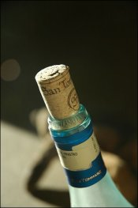

Wine: God’s gift to man
Marsanne, Syrah, Viognier, Tempranillo, Chenin Blanc, Verdelho … anyone intimidated by these suspiciously foreign-looking words? I was once, but let me reassure you that all of the preceding terms are no more than harmless varieties of grape (or “varietals” as they call them in the wine game), so fear ye not. In fact, each one of them tastes delicious in its own unique way.
Sure, there’s some terminology to get around, and it’s much easier to just get “the one in the red cardboard box”, but I tell you now that while curiosity is a vice which may have killed the cat, in the wonderful world of wine it is a virtue which invariably ends in infinite reward. And if you think all the different words with funny pronunciations are a waste of time, remember the wise words of Aussie wine guru Matt Skinner: “Wine is like an exotic foreign country that you really want to explore. Like most exotic countries, it comes complete with its own language, and unless you know more than just the token handful of lines to get you by, getting maximum enjoyment out of that country is going to be a hard assignment.” Bone up on that lingo, amigos.
I am a self-proclaimed wine amateur, but I really have drunk a fair bit of the stuff (in moderation, of course). I will make no apologies for my lack of expertise. On the contrary, I revel in it and hide behind Matt Skinner’s comforting phrase, “the best thing about wine is knowing you’ll never know it all.”
No one can doubt that wine is in fashion. It has long been a symbol of aristocracy and culture, it’s an integral part of celebration and festivity, and it’s an undeniable instigator of mirth and felicity. You could even say it’s the new black, but really it’s the old black. Ever since the day some enterprising young whippersnapper found out that fermenting grapes gave you more bang for your buck, our friend wine has been popping up pretty much everywhere: in the Greek symposiums and in the Norse legends, from the finest claret in the nobleman’s castle to the home-brewed grappa in the peasant’s earthen hut. It gets around, does wine, guest-starring in numerous occasions of importance. One need only recall Jesus turning water into wine at the wedding feast of Cana. Apparently it was quite the vintage, if we take the guests at their word (the Bible doesn’t say in John 2, but I reckon it was Pinot Noir). Don’t listen to the sceptics who say it was grape juice. They’re only half right; it was grape juice – for adults.
Anyway, I’d better get down to business and attempt to impart some knowledge. Firstly, wine is primarily about fun, so learn to throw your hat over the fence and have a blast. It is possible to look past the Chateau du Cardboard to buy yourself a bottle of something you can hardly pronounce, and just give it a go. It can be daunting when you depart from the tried and true Corban’s White Label or Banrock Station Chardonnay, but you’ll get used to it. And if you’re ever really stuck, ask the nice man at the counter of the liquor store. I’ve generally found that people in the know are more than happy to take you under their wino wing. It’s a sharing, caring environment in the wine world.
Now for a few tips on wine fashion. Are you going out to dinner and wanting to buy a bottle that’s as boring as your mates at the chess club? Get a Merlot – it’s as complex as an amoeba, and drinking it is about as interesting as watching paint dry. Uncool. However, it blends very, very well with Cabernet Sauvignon, taking the edge off and delivering some fruity goodness to the mix. Cab Merlots are a safe bet and almost invariably go down a treat. Check out some of the fragrant Cab Merlot offerings from Margaret River in Western Australia. They’re excellent and they’re pretty cheap in New Zealand, too (I recommend Palandri or Howard Park).
If I had to name the steeziest (that means best, kids) white varietal of the moment, my money would be on Viognier. It’s the white wine to be drinking right now because it has an impressive sounding name (vee-on-yeah or vee-on-yay), layers of lush apricot and peach on the nose (have a good schniff), and gentle orange-blossom on the palate, not to mention an oily texture which goes down oh-so-smooth. It also tends to have a high alcohol percentage, generally rating in at about 15%. If you want to try a Viognier without burning a hole in your pocket, the Yalumba Y-Series drinks nicely, and can had for around ten bucks.
As far as reds go, my personal favourite is Pinot Noir. As well as being able to bore dinner guests with tales of how delicate the grape is, it also has the advantage of tasting delicious – important, I feel. The Martinborough and Central Otago regions in New Zealand do some fantastic mixes just bursting with cherry and other dark fruit and berry flavours, but they often come with a price tag. If you don’t mind parting with around $18 dollars (stop whinging, it’s not that much) then I’d recommend either Te Kairanga Estate Pinot or Stugglers Flat Pinot. They’re both wonderful examples of what the Pinot Noir grape has to offer.
At this stage it’s probably appropriate to emphasise just how imperative it is to be open-minded; don’t get too fixated on any one region, estate or varietal. Parochialism may have got your grandfather through life, but it will only hamper you in your search for fine wine. For instance, the other week, in a heady moment of cavalier curiosity, I became the tentative owner of a bottle of Mills Reef Reserve Pinot Noir. I was dubious as to what a Hawke’s Bay Pinot might shape up to be. Expecting a good Pinot from the Hawke’s Bay is like expecting a good meal at McDonald’s, but my experimental nature was rewarded with an eminently drinkable and, I dare say, quite good wine.
This motley mishmash must end somehow, so I charge all of you to get out there and try as many different wines as you can afford to get your mitts on. See a half-drunk glass at a function? Wrap your laughing gear around it. (No, don’t do that if you want to avoid facial herpes, but do try those wines, won’t you.) Spend at least a couple of seconds contemplating what you see, smell and taste in your glass. Read, think and drink about it. Let the brave amongst you go visit wineries – you’ll get free tastings and learn insane amounts about wine and other interesting stuff. Bring friends if you feel a little overwhelmed. Remember, we all start somewhere – as a first year student I thought Jacob’s Creek Shiraz Cabernet was a top drop, and it doesn’t pain me to say that I’m glad I was able to enjoy it at the time. Cherish each varietal as it slides down your grateful throat, and let the satisfied smile gracing your face bear testimony to that which can only be described as a special gift from God to man.
With a personality which blurs the border between that which is ludicrous and that which is not, Richard Steenhof is a concatenation of pompous law student and rascally wine-bibbing jackanapes. In his spare time he plays sports, chills with his bro Si, and gets affianced to Rebecca Jayne Wierenga. Beware: a little of this man goes a long way.